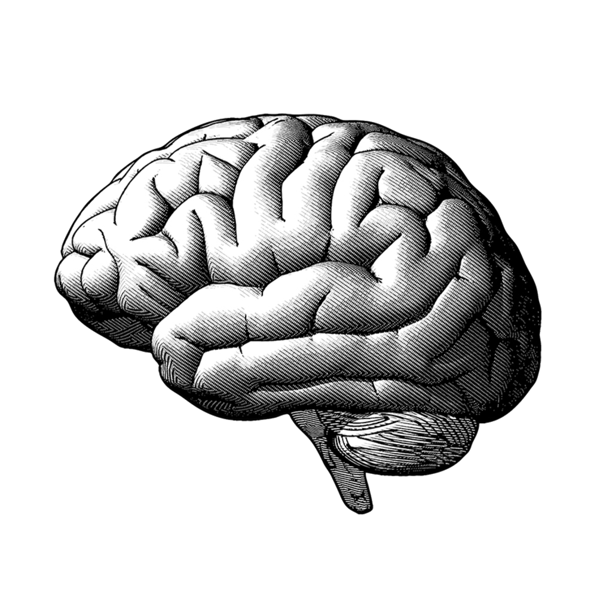
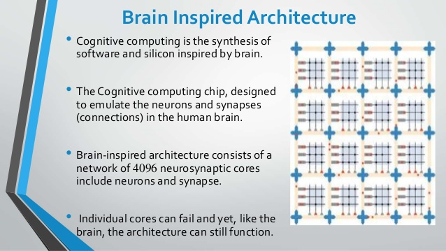
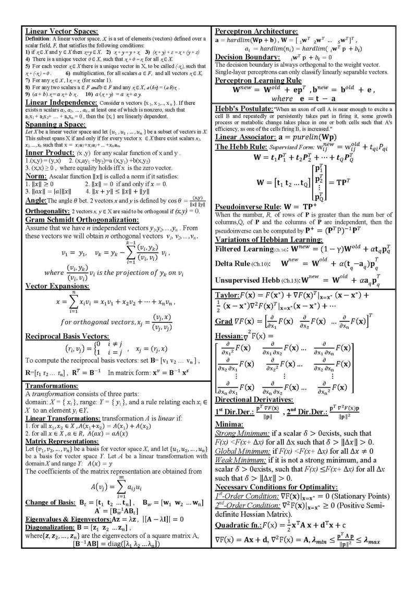
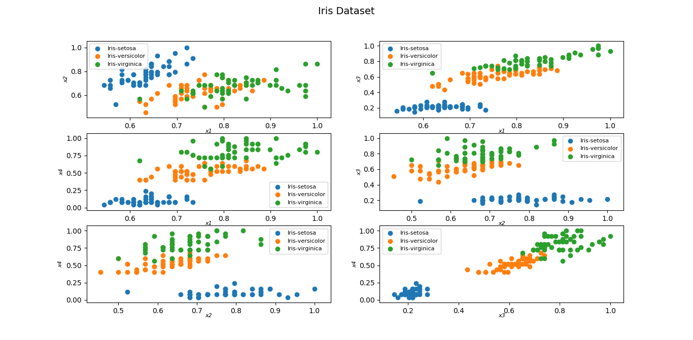
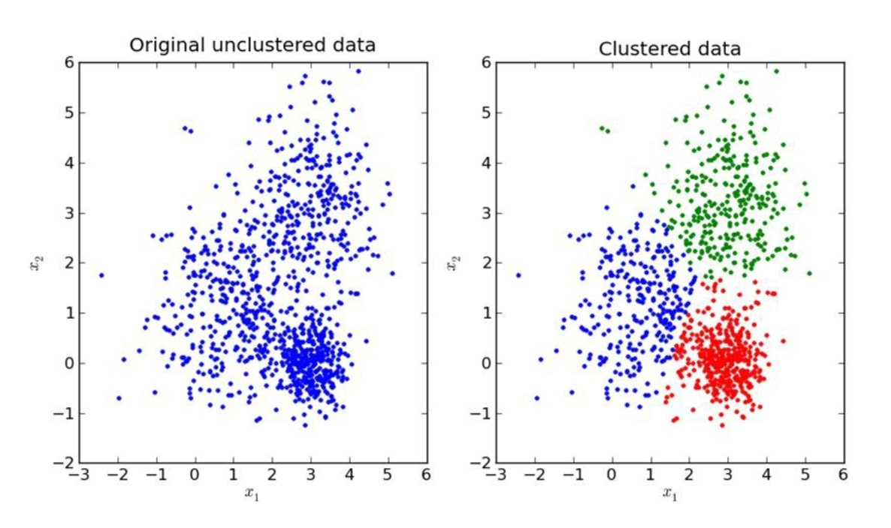
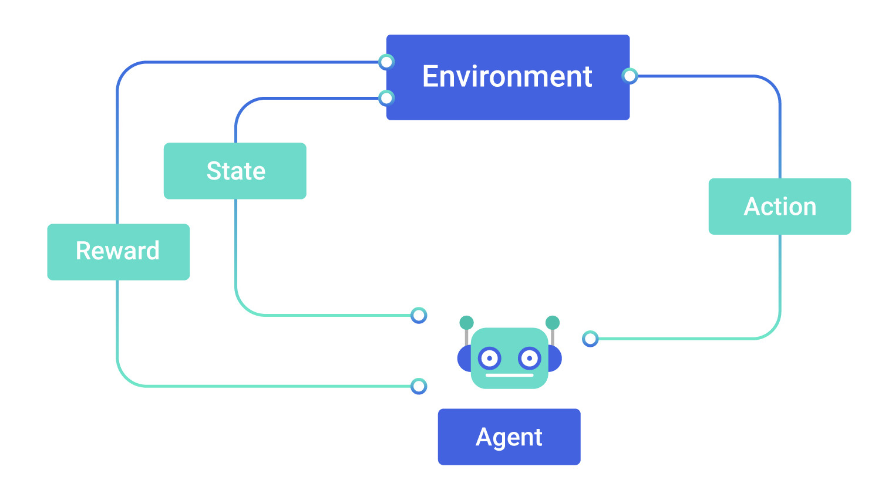
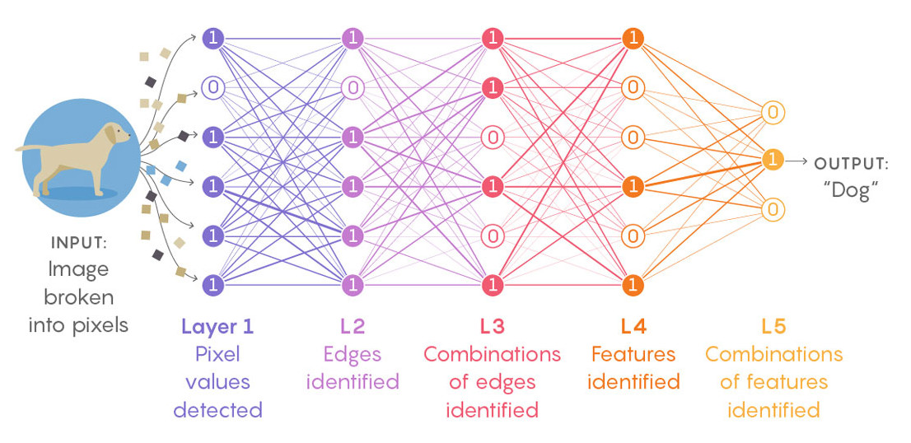
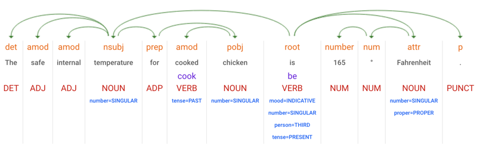
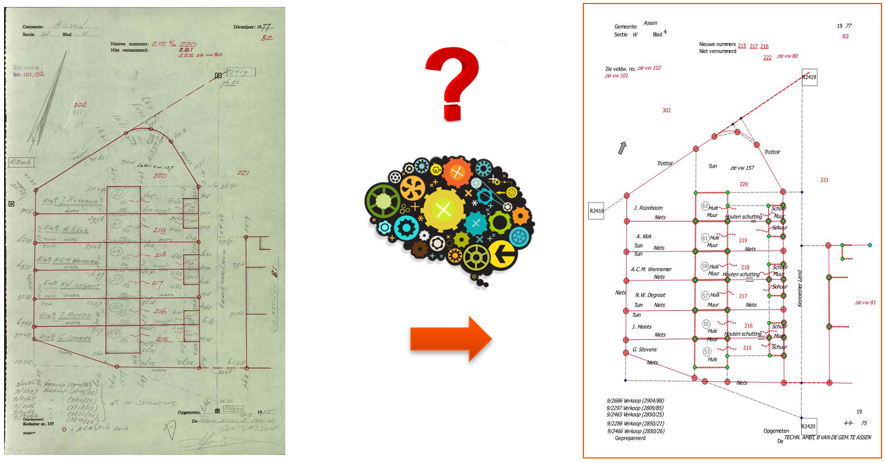
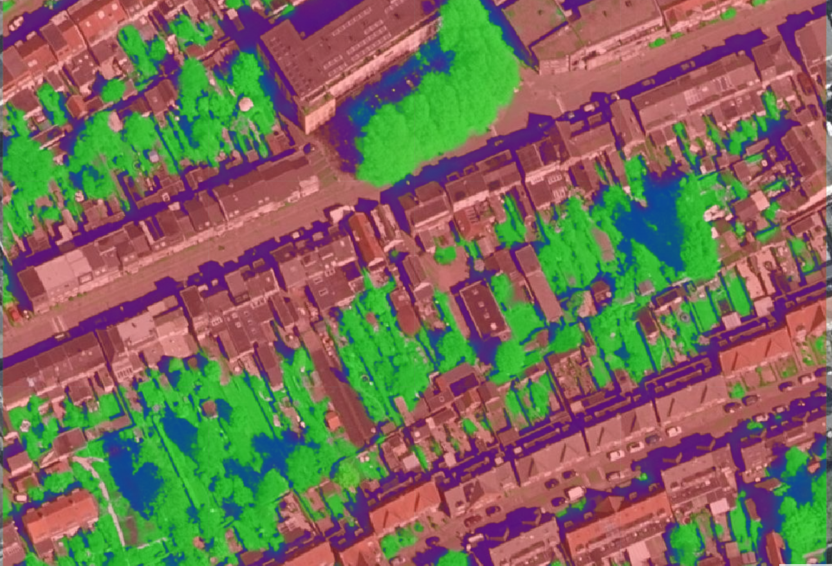

Introductie
AI & ML
(en Akte-AI)
Wat is AI?
(afkorting van Artificial Intelligence, a.k.a. Kunstmatige Intelligentie)

Wat is een beker?
- Hoe weten we dat?
- Wie heeft ons dat verteld?
- Wie heeft ons dat geleerd?
- Hoe hebben we dat geleerd?
Patronen
Patronen
Patronen
Patronen

Brain-inspired computing
Maar hoe werkt dat dan?
(bij een machine)



Hoe dan?
- Gelijkheid berekenen
- Kans berekenen
- Waarschijnlijkheid berekenen

AI vs ML
- Cognitieve vaardigheden (AI)
-
- Problem solving
- Learning (ML)
- Augmented Intelligence?
Machine Learning
- Geen: OOAD (Object Oriented Analyses and Design)
- Wel: train models
Types Machine Learning
- Supervised learning
- Unsupervised learning
- Reinforcement learning
- Deep learning
ML type: Supervised learning
Input en output zijn gelabeld
ML type: Unsupervised learning
Learning machine + analist
ML type: Reinforcement learning
Regels ipv data
ML type: Deep learning
Neurale netwerken
Uitdagingen van ML
- Data & Ground Truth !!!
- Vooroordelen (Bias)
- Uitlegbaarheid
- Compute power (CPU vs GPU)
Resources
AI @ Kadaster
- Akte-AI | Natural Language Processing (NLP)
- LOKI | NLP + Knowledge Graph (no AI)
- Kadastrale Kaart Next (1-op-1 kaart) | deep neural nets + NLP
- Geo Expertise Centrum - Verstening | convolutional neural nets
Akte-AI
Augmented Intelligence
Natural Language Processing (NLP)
NLP flow
tokenize => word2vec => NER => dependencyAkte-AI flow

Akte-AI Demo(s)
- viewer demo (auth)
- prodigy (akte-verzamelaar; localhost:8080)
- documentatie (private)
Kadastrale Kaart Next (1-op-1 kaart)
Kadastrale Kaart Next Demo(s)
Geo Expertise Centrum - Verstening
Convolutional Neural Networks